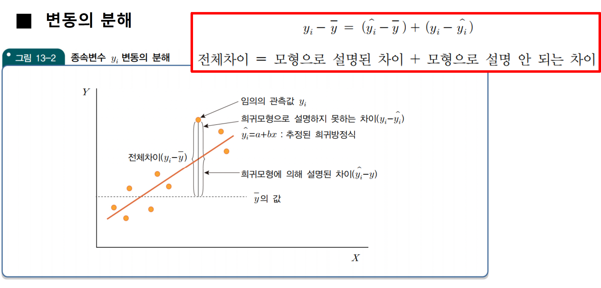
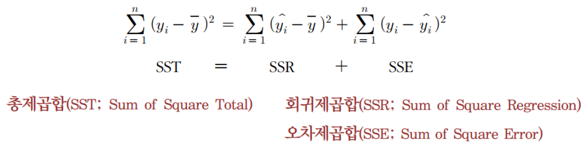

#예시
1-pf(5,1,3)[1] 0.11136721.회귀분석은 변수들 간에 상관관계를 분석하는 것이므로 이 보다 작은 범위의 의미를 가지는 인과관계로 확장하여 해석할 수 있다.
1)참
2)거짓
답: 거짓
2.단순회귀분석에서 상관계수의 부호는 회귀계수의 부호와 항상 동일하다.
1)참
2)거짓
정답 : 1
3.단순회귀분석에서 절편에 대한 추정량, a 가 양수로 나왔다면?
1)양의 상관관계를 의미
2)x가 증가하면 y도 함께 증가한다는 의미
3)y 값은 항상 양수의 값을 갖는다는 의미
4)앞의 3개 보기 모두 해당되는 내용이 아니다.
정답 : 4
1. p값이 크다는 의미는 데이터가 귀무가설로부터 멀리 떨어져 있다는 의미이다.
1)참
2)거짓
정답 : 2
먼저 변동의 분해를 보자.

위와 같은 변동의 분해는 제곱합을 하더라도 유지된다.

총변동에서 Regression에 의한 변동이 차지하는 비율, 즉 회귀모형에 의하여 설명되는 제곱합(변동)이 차지하는 비율이 높을 수록, x변수가 y를 예측하는데 중요한 변수라고 볼 수 있다.
이에 결정계수 \(R^2 = SSR/SSE\)가 높을수록 y를 예측하는데 좋은 회귀모형이라 볼 수 있다.
1. 회귀분석에서 SSE=200, SSR=300 이라면 결정계수, \(R^2\) 값은 얼마인가?
정답 : 0.6
해설 : 300/(200+300)
2. 결정계수, \(R^2\) 값이 1이라는 의미는 SSE 값이 0 이라는 의미이다.
1)참
2)거짓
정답 : 1
3. 단순회귀분석에서 상관계수가 0.64라는 의미는 두 변수의 결정계수가 0.8이라는 의미이다.
1)참
2)거짓
정답 : 2
해설: 상관계수가 0.8 일 경우 결정계수가 0.64
4. 결정계수, \(R^2\) 값이 0이면 SSR값은 0이 되어야 한다.
1)참
2)거짓
정답 : 1
5. 두 변수의 상관계수가 0.8이라는 의미는 단순 회귀분석에서 두 변수의 결정계수가 0.64이라는 의미이다.
1)참
2)거짓
정답: 1
해설 : 상관계수가 0.8 일 경우 결정계수가 0.64
6.단순 회귀분석에서 \(R^2=1\)이라면?
1)SSE 값이 양수라는 의미
2)SSE 값이 0이라는 의미
3)SSE 값이 음수라는 의미
4)SSE 값이 1 이라는 의미
답 : 2
1. 확률변수 X 가 정규분포 N(60, 16) 분포를 따른다고 하였을 경우 P(55≤X≤62) 확률을 R의 함수로 기술하시오.
정답 : pnorm(62,60,4) - pnorm(55,60,4)
1. 주어진 동전이 공정한 동전인 지를 확인하기 위하여, 동전을 10번 던지는 실험을 진행하였다.
(1)이 문제에 적용되는 모수를 정의하고, 귀무가설과 대립가설을 기술하시오.
(2)이 문제와 관련된 확률변수를 기술하고 관련분포를 기술하시오.
(3)동전을 100번 던지는 실험에서 60번 앞면이 나타났다. p-값을 R코드 형태로 표현하시오.
해설 : (1)모수 p: 동전 앞면이 나올 확률 Ho: p = 1/2 Hi: p \(\neq\) 1/2 또는 H: p!= 1/2
(2)확률변수: 동전을 100번 던졌을 경우 나타나는 동전 앞면의 수, 또는 동전을 100번 던졌을 경우 나타나는 동전 앞면이 나타나는 비율
분포: n=100 과 p (또는 p=1/2)을 갖는 이항분포
(3)2*(1-pbinom(59, 100, 1/2)) (양측 검정이므로 꼬리 확률에 2를 곱해야 한다.)
pbinom(q,size,prob)은 이항분포, binomial distribution 중, 누적분포함수 계산에 사용한다.
이항분포는 셀 수 있는 값에 대한 분포, 즉 이산형 확률 분포이다.
그러므로, 60번이상 앞면이 나올 확률(꼬리 확률) \(Pr(60\le X)\)는 \(1-Pr(X\le 59)\)이다.
2. 동일한 조건 아래서 유의수준이 커지면 귀무가설 H0 를 기각할 가능성이 커진다.
1)참
2)거짓
정답 : 1
3. 가설검정에서는 ‘귀무가설이 참이라면’ 이라고 가정하고 검정통계량의 분포를 찾는다.
1)참
2)거짓
정답 : 1
4. 귀무가설이 기각되었다는 의미는 대립가설이 채택되었다는 의미이다.
1)참
2)거짓
정답 : 1
5. 유의수준이란?
1)제1종오류에 대한 허용되는 최대값
2)제2종오류에 대한 허용되는 최대값
3)신뢰수준을 의미
4)p값을 의미
정답 : 1
6. A질환에 대하여 기존의 치료방법은 질병을 치료하는 데에 평균 15일이 걸린다고 알려져 있다. 어느 제약회사에서 새로운 치료방법을 개발하였는데, 이 새로운 치료방법은 치료기간을 15일 보다 더 줄일 수 있다고 주장하고 있다. 실제로 70명의 환자에게 새로운 치료방법을 적용하였더니 치료기간에 대한 표본평균 14.6(일)과 표본표준편차 3(일)로 나타났다. 다음 물음에 답하시오 (유의수준은 5%로 가정)
(1)이 문제에 적용되는 모수를 정의하고,
(2)귀무가설과 대립가설을 기술하시오
(3)p-값을 R 함수식으로 표현하시오.
해설: (1)모수 : A질환에 대하여 치료하는데 걸리는 평균 치료기간
(2)Ho: \(\mu= 15\), H1:\(\mu< 15\)
(3)norm(14.6, 15, 3/sqrt(70))
7. 어느 체중감량 프로그램이 제시한 4개월에 18kg 감량” 이라는 광고 문구에 대하여 소비자 단체에서 과대 광고라는 항의가 들어왔다. 이를 판단하기 위하여 통계적 가설검정을 실시하기로 하였다. (단, 표준편차는 6kg으로 알려져 있다.)
(1)모수를 정의하고, 귀무가설과 대립가설을 기술하시오.
(2)검정통계량을 정하고 귀무가설이 참인 경우 어떤 분포를 갖는지 기술하시오.
(3)36명을 조사한 결과 평균 체중 감소량이 15kg으로 나타났다면 이에 대한 p값을 R의 수식으로 표현하시오.
해설 :
(1)모수 : 체중감량 프로그램을 진행한 후 4개월 후 나타난 체중 감량 평균값
HO (귀무가설): \(\mu\)= 18kg
H1 (대립가설) : \(\mu\) < 18kg
(2)검정통계량: 표본평균 또는 표본평균의 표준화된 Z값 귀무가설이 참이라면, 표본평균은 µ=18kg 표준편차는 6/sqrt(36)=1 이 되는 정규분포를 따른다.
(3)pnorm(15, 18, 1)
8. 가설검정에서 의사결정을 내릴 때는 대립가설을 가정한 상태에서 귀무가설을 기각할 수 있는지 또는 기각할 수 없는지를 판단한다.
1)예
2)아니오
정답: 2
해설: 귀무가설을 가정한 상태에서 귀무가설을 기각할 수 있는지 또는 기각할 수 없는지를 판단한다.
1. 제1종 오류는 잘못된 귀무가설 Ho 를 기각시키지 못하는 오류를 의미한다.
1)참
2)거짓
정답 : 2
해설 : 제1종 오류는 참 귀무가설 Ho 를 기각시키는 오류를 의미한다.
2. 가설검정에서 “유의수준 5%에서 귀무가설을 기각할 수는 없다”라는 결론이 나타났다면 다음 중 어떠한 오류에 노출되어 있는가?
1)제1종 오류
2)제2종 오류
3)제1종 오류 와 제2종 오류
4)귀무가설을 기각하였으므로 어떠한 오류에도 노출되어 있지 않다.
정답: 2
3. 제2종오류는 어떠한 경우에 발생하는가?
1)귀무가설을 기각하는 경우
2)귀무가설을 기각하지 못하는 경우
정답 : 2
4. 은행에서 대출 심사를 진행하는 경우,
(1)은행 입장에서 고려해야 하는 적절한 귀무가설과 대립가설을 세우고, 이에 대한 이유를 설명하시오
(2)제2종오류에 대하여 설명하시오.
해설 :
귀무가설: 대출 신청자는 대출 상환금을 갚지 못할 것이다.
대립가설: 대출 신청자는 대출 상환금을 갚을 것이다.
5. 제2종 오류는 참인 귀무가설을 기각시키는 오류 의미한다.
1)참
2)거짓
정답 : 2
해설 : 제2종 오류는 거짓인 귀무가설을 기각시키지 못하는 오류임.
\(F값 = \frac{MSR}{MSE} \sim F(1,n-2)\)
F값은 분자의 자유도(위에서 1)와 분모(n-2)의 자유도에 따라 분포가 달라진다.
pf(q,df1,df2) #df= degree of freedom#예시
1-pf(5,1,3)[1] 0.11136721.다음 R의 결과를 보고 물음에 답 하여라.
lm(y~x)
Call: Im(formula = y ~ x)
Coefficients:
(Intercept) x
2 1
anova(lm(y~x))
Analysis of Variance Table
Response: y
Df Sum Sq Mean Sq F value Pr(>F)
x 1 10 10 ? 0.1114
Residuals 3 6 2해설:
1.회귀모형에서 오차항, \(\varepsilon\)에 대한 분산인 \(\sigma^2\) 의 추정량은 MSE 이다.
1)참
2)거짓
정답 : 1
2.총 125개 관측값에서 10개의 독립변수로 구성된 회귀모형의 경우 MSE에 대한 자유도는 얼마인가?
정답 : 114
해설 : SST 124, SSR: 10, SSE: 114
3.10개의 자료를 이용하여 3개의 독립변수로 구성된 회귀분석을 진행하였을 경우, SSE에 대한 자유도는 얼마인가?
정답 : 6
해설:SST에 대한 자유도 9 SSR에 대한 자유도 3 SSE에 대한 자유도 6
4.모형의 표준오차에 대한 추정량은 MSE이다.
1)참
2)거짓
정답 : 2
해설 : 오차항의 분산에 대한 추정량이다.
1.회귀분석 모형을 진단하는 과정에서 점검해야 하는 항목을 모두 고르시오.
답: 5
1.회귀분석 모형의 오차항에 대한 가정을 기술한 것으로 틀린 문장을 모두 고르시오.
답 : 5
1. 회귀모형에서 오차항, e에 대한 표준편차는 모형의 표준오차를 의미한다.
1)참
2)거짓
정답 : 1
1.독립변수가 1개인 단순회귀분석에서 F-검정과 t검정은 동일한 검정이므로 두 검정에 대한 p값은 항상 동일하다.
1)참
2)거짓
정답 : 참
정답: 참 해설 : 9개의 더미변수를 설정하면 나머지 한 개 브랜드는 결정 나버리기 때문에 9개 더미변수만 있으면 된다.
정답 : 2
정답 : 참
1.높은 다중공선성을 갖는다는 의미는 독립변수들끼리 서로 상관관계가 높다는 것을 의미한다.
정답 : 참
정답 : 4
Coefficients: Estimate Std.Error t value Pr(>t) (Intercept) 4.3250 1.4237 3.038 0.022865 입사성적 2.3750 0.2681 8.859 0.000115 ** 성별 남자 7.4250 2.2526 3.296 0.016487 입사성적: 성별 남자-1.2250 0.3597 -3.406 0.014394
Signif codes: 0 **** 0.001 ** 0.01 * 0.05: 0.1 * 1 Residual standard error: 1.072 on 6 degrees of freedom Multiple R-squared: 0.9558, Adjusted R-squared: 0.9337 F-statistic: 43.22 on 3 and 6 DF, p-value: 0.0001861
해설:
12 다음은 다중회귀분석에 대한 간단한 분산분석표이다. Y를 종속변수, X1, X2…를 독립변수라고 하였을 경우, 다음 물음에 답하시오. 분산분석표 자유도 제곱합 모형 4 400 오차 6 600
해설 : (1) n=11 (2) \(R^2=400/1000=0.4\) (3) F(4.6) 분포 (4) 4개 (5) 4개의 독립변수 중 최소한 한 개는 통계적으로 유의하게 종속변수 Y에 영향을 미친다. (6) 다중 회귀분석이므로 p값이 동일하지 않다. (7) sqrt(600/6) = 10 (8) confint(my.model, level=0.95)